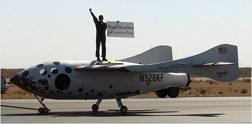

[Previous entry: "On a lighter (and larger) note ..."] [Main Index] [Next entry: "Interview with Pacifica Radio (Radio Alchymy)"]
06/22/2004 Archived Entry: "SpaceShipOne with libertarian sign"

IS THIS COOL, OR WHAT? After his famous flight, SpaceShipOne pilot Mike Melvill holds up a sign made by Arizona libertarians Powell Gammill and Ernie Hancock. "SpaceShipOne: GovernmentZero." NPR also mentioned the sign in its report on the event (Scroll down to "Private Manned Rocket Plane Reaches Space."). And for that matter, so did the New York Times and a lot of other newspapers.
(On that same NPR page, you'll also find a report on the Free Town Project's hope of taking over Grafton, NH. That one's not so good: "Town Doesn't Welcome Libertarians.")
Posted by Claire @ 02:26 PM CST
Link